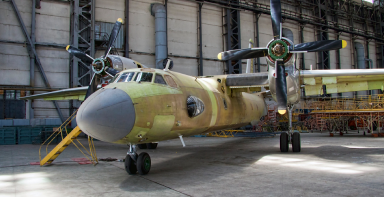

Про нас
Найбільша гордість УЛА - високопрофесійні інженери і співробітники підприємства, що мають багаторічний досвід роботи на авіаремонтних підприємствах України.


Вони тісно співпрацюють з конструкторами, підприємствами авіабудування, науково-дослідними центрами і організаціями
Повний цикл обслуговування і ремонту здійснюється на сучасній ремонтній базі з необхідним обладнанням.